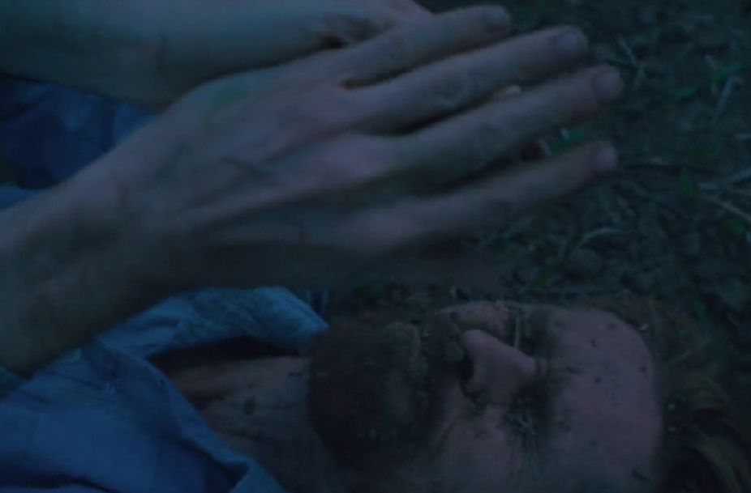

IV Bachillerato "C"
Este trabajo se basa en la opinion grupal y propia de nuestros compañeros sobre la pelicula Puertas de la Eternidad y resolvemos las preguntas de la Guía Aprendizaje número 4 que nos dejo nuestro docente.
No en realidad, pero sus obras nos transmiten trazos de inspiración en algo que buscaba y de eso nos hablaba la película.
Las primeras si porque se inspiraba en lo cotidiano, pero después fue buscando nuevas experiencias para sus obras.
Al principio Van Gogh buscaba en sus obras una belleza por interés (ganar dinero), y después busco una nueva experiencia para basarse. Es indignante como un gran artista fue considerado loco y anticuado por retratar la naturaleza, Van Gogh acertó con su visión, hacer que el mundo viera la naturaleza de una manera diferente gracias a él, el mundo del arte evoluciono, sus pinturas son una maravilla. Van Gogh es considerado como uno de los mejores pintores de todos los tiempos, lo curioso es que sus obras tomaron importancia fue después de su muerte.
Sí, la película hace ver el arte de manera correcta pero no a quien lo hace, a Van Gogh lo juzgan por como es y ya que ven que es una persona loca, que tiene muchos problemas y se cortó la oreja, piensan que el arte es como el horrible, desastroso, pero cuando Van Gogh terminó muriendo empezaron a apreciar su arte, y terminó siendo casi igual en la vida real, él termino siendo un artista incomprendido
